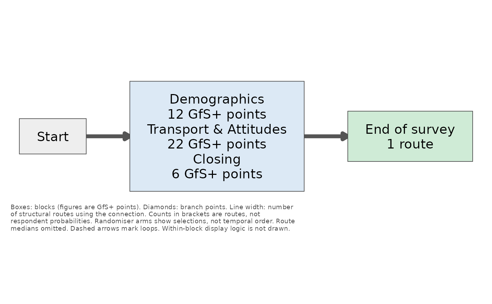

Draw the block-level routes through a Qualtrics survey
Source:R/plot_route_flowchart.R
plot_route_flowchart.RdBlocks show their names and GfS+ points, diamonds show branch conditions, and end boxes show route counts and the median of their route medians (each structural route counts equally). Line widths count structural routes, not respondents or probabilities. Randomiser arms show selections, not their random temporal order. Within-block display logic is not drawn. Loop labels give maximum repetition; repetition is not an extra route. Unsupported conditions are marked as untranslated, with raw operands.
Usage
plot_route_flowchart(
x,
direction = c("auto", "LR", "TB"),
collapse_ends = TRUE,
merge_chains = TRUE,
highlight_route = NULL,
title = NULL,
wrap = 24,
max_routes = 10000L,
include_medians = TRUE
)Arguments
- x
A QSF filename, a
read_qsf()result or aburden_report(). Reports retain the survey flow and enumerated routes, including when built withprofile = FALSE.- direction
One of
"auto","LR"(left to right) or"TB"(top to bottom). Auto uses TB for more than nine boxes.- collapse_ends
Combine screen-outs into one box.
- merge_chains
Combine consecutive blocks into one box. Loop blocks stay separate. Use FALSE to inspect individual blocks.
- highlight_route
Optional original route identifier (
path_id).- title
Optional plot title, wrapped at word boundaries.
- wrap
Approximate characters per line, at least eight.
- max_routes
Enumeration cap when
xis a survey. If exceeded, the structural flow is drawn with uniform lines and no route counts or medians. A report uses its retained enumeration and scoring settings.- include_medians
Calculate and show route burden medians (default TRUE). FALSE skips the full burden report when a survey is supplied: block points and route counts are still shown. With a report, FALSE simply hides its medians and preserves its scoring settings.
Value
A ggplot object. Attributes model, flowchart_layout and size_in hold
the graph, connector geometry and suggested export dimensions in inches.
Requires ggplot2. For large surveys use LR, chain merging and a larger
export size rather than shrinking text to fit a page.
Text scales with its boxes when the plot is resized. The burden_report
attribute retains a report calculated for this plot, for fast redraws.
Examples
if (requireNamespace("ggplot2", quietly = TRUE)) {
f <- system.file("extdata", "demo_simple_linear.qsf", package = "surveyBurden")
plot_route_flowchart(f)
plot_route_flowchart(f, include_medians = FALSE)
}

if (FALSE) { # \dontrun{
# The API-to-chart workflow needs no intermediate report:
fetch_qsf("SV_xxxxxxxxxxxxxxx") |> plot_route_flowchart()
} # }